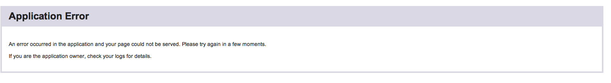

I was hired to perform both blackbox and whitebox testing on Ray Xiao's node.js highscore web application. The application uses a node.js server and MongoDb to store records of a user's name, the game they played, and their score.
I opted to attack Ray's API by hand. I did not use any testing suites. Instead, I focused on showing the full effects of each error found by traditional probing methods. I focused on a) injecting malicious code into his MongoDB b) overloading the server and c) injecting freeze-state code through the url bar.
I discovered several key flaws in Mr. Xiao's web application. These flaws allow a user, whether by ill intent or by simple ignorance, to put malicious code into the website, affecting not only the integrity fo the database, but even crashing a user's browser when they navigate to the site, or tricking them into giving up sensitive information.
The first critical issue I detected was Mr. Xiao's lack of a rendering engine. This is a problem, because rendering engines like Jade will automatically stringify any rendered data. Mr Xiao outputs the contents of his database directly, in an unsanitized format. At no point during the input of information, and at no point during the output, is input santized. Therefore, it was trivially easy for me to inject not only html code which could dupe a user into revealing sensitive information, but also an external script which I used to run a while(1) loop. This attack was successful, and apparent on the home page.
This immediately killed my browser upon testing. It should be noted that this malicious attack crashed Google Chrome, a browser known for its multithreading; such a vulnerability is easily fixable, but catastrophic if left alone. Following this attack, I modified my external script by removing the while loop... unfortunately, upon returning to the home page, I was greeted by a most... delicious... sight.  This state persisted for several hours. I assert that it is a very serious issue because it took down the entire page, is capable of crashing a browser which may be running sensitive processes, and can dupe users into revealing information that they would otherwise safeguard.
To resolve the issue, Mr. Xiao could use the following code in his page, in order to sanitize the contents of his database:
Another solution would be to use regular expressions (as above) upon receiving the input from submit.json... At that point, if an error were detected, content would simply not be inserted, and a suitable error message returned.var entityMap = { "&": "&", "<": "<", ">": ">", '"': '"', "'": ''', "/": '/' }; function escapeHtml(string) { return String(string).replace(/[&<>"'\/]/g, function (s) { return entityMap[s]; }); }
This code was a simple script I wrote to see if I could overload his (Heroku's) server with requests. It worked like a charm, and revealed two important flaws in his system. First of all - this application in no way checks to see how many requests are being made.The above script runs curl commands in rapid sequence, until a desired threshold is released. The script ran without a hitch, and I'd like to show you a picture that you may find familiar: I waited until Heroku had recovered after the last attack, and ran this. Almost instantly, the site crashed. So, it was revealed that Heroku does not inherently protect against attacks like this. The second thing that was revealed to me is in a smiliar vein - Mr. Xiao never checks for duplicate entries. As you can see, my script inserts the same entry over and over. When his application came back up, the home page was inundated with tens of thousands of my entries. Success!$url = 'http://limitless-journey-1085.herokuapp.com/submit.json'; $fields = array( 'game_title' => urlencode('frogger'), 'score' => urlencode(210), 'username' => 'sam' ); foreach($fields as $key=>$value) { $fields_string .= $key.'='.$value.'&'; } rtrim($fields_string, '&'); $ch = curl_init(); $a_big_number = 10000000; for ($i = 0; $i < $a_big_number; $i++) { curl_setopt($ch,CURLOPT_URL, $url); curl_setopt($ch,CURLOPT_POST, count($fields)); curl_setopt($ch,CURLOPT_POSTFIELDS, $fields_string); curl_exec($ch); } curl_close($ch);
To prevent this, there is not a whole lot Mr Xiao can do... the first thing that comes to mind is checking for duplicate entries. This would prevent the most simplistic of attacks, but also could annoy users who happened the have the same score in multiple plays of one game. I have devised a potential solution that should work, by using an ip matcher and the setTimeout function.
//http://stackoverflow.com/questions/3653065/get-local-ip-address-in-node-js, assume you have ip var curr = null; var flag = false; var interval = 100; app.post("/submit.json", function(req,res){ /*---------------------*/ /* various other tasks */ /* */ /* */ /*---------------------*/ var ip = getNetworkIp(); if (curr == ip) { if (flag) { res.json({error:"request too quick!!"}); return; } flag = true; window.setTimeout(function() { flag = false; }, interval) } curr = ip; })
The idea here is that the node server stores the most recent ip address, and a flag. When an ip address is the same one to make two consecutive requests to the server, a flag is thrown - the setTimeout function resets the flag in a predetermined amount of time. Therefore, a malicious curl script like above would be much less effective.
I see this as a serious issue, but it's not one confined to Mr. Xiao's program. Sites all over the world are attacked like this every day. It is a problem with the way servers are set up, and the creative nature of attackers. So, while it is serious, it is perhaps not as pressing.
A screenshot of Mr. Xiao's homepage:In the future it will be imperative to store a database of users to whom it is acceptable to grant access. This will solve the "*" problem, and also the curl attack problem (at least, the attacker will not be anonymous). To provide a basic level of security to the app should not be very difficult, but preventing DDOS attacks will be.